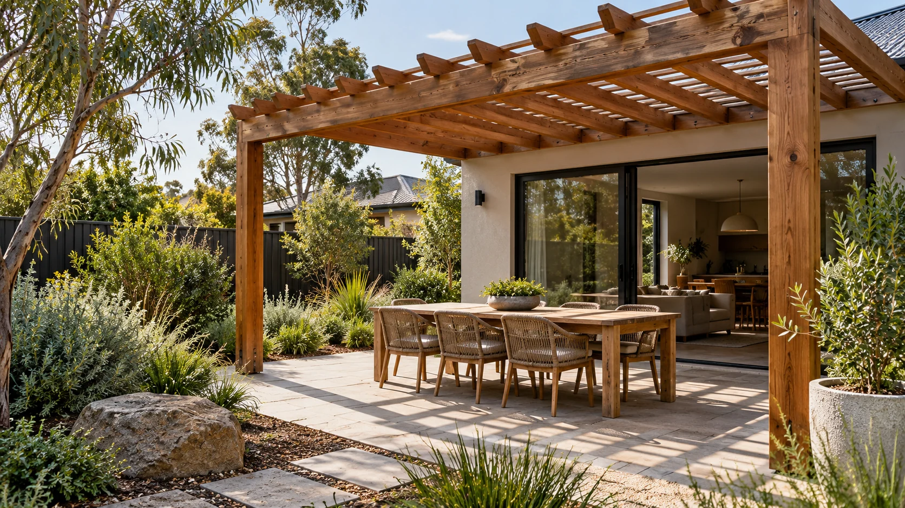
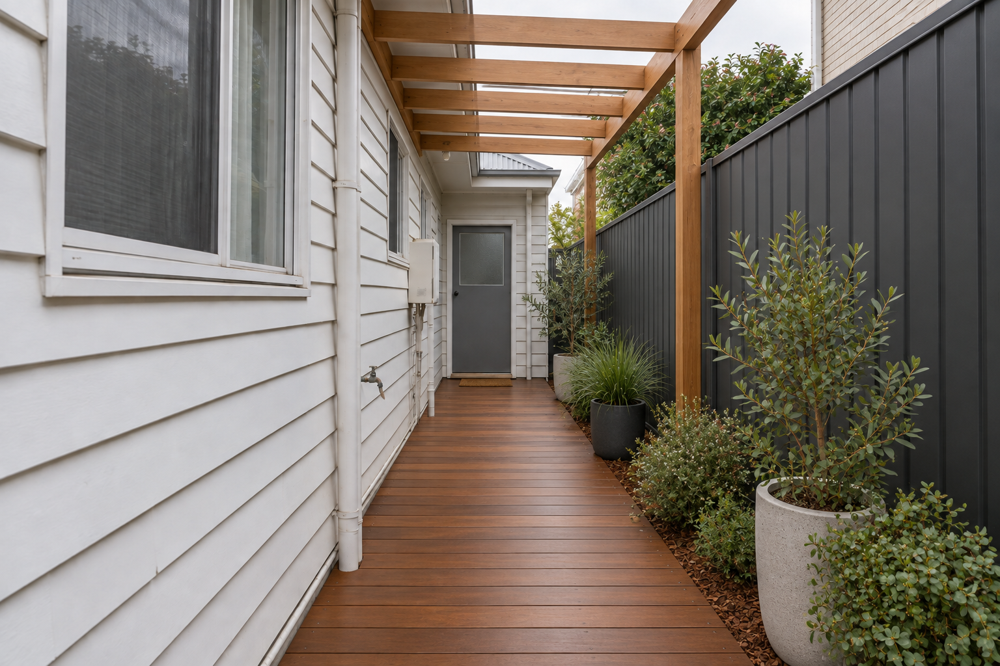

Light, rhythm and partial shade. Slat direction and spacing control the feel below.
Service 03 · Shade
Make shade
feel natural.
A useful outdoor room starts with the sun, the weather and the view back to the house.
Plan my cover ↗
Follow the lightShade is a moving
Shade is a moving
design problem.
An open pergola can soften strong light without closing the sky. A roofed structure gives rain cover, but needs planned fall, guttering and a path for stormwater. The right answer depends on when you use the space and where the sun reaches it.
- Photograph the area in morning and late afternoon.
- Mark the view and circulation you want to keep open.
- Identify where roof water can safely discharge.
Choose the coverOpen to the sky,
01 / Open rafters 02 / Fixed roofing 03 / Adjustable louvres
Open to the sky,
or ready for rain?
Posts, span, attachment points and roof type work as one system. A freestanding structure can solve a different problem from one fixed to the house.
Reliable cover, with roof pitch, gutters and flashings included in the design.
Changing light and ventilation, with more mechanical and structural complexity.

Build the next stepClaim the
Start the quote brief ↗